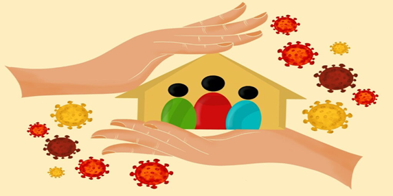

La situación, temporal, de ruptura de la "normalidad" provocada por la pandemia del COVID-19 afectó a todos los ámbitos y clases sociales. Es nuestra intención abordar una selección de problemas ocasionados por la misma desde la óptica del material trabajado en la cátedra. A continuación, abordaremos dichos problemas desde las perspectivas de estos autores Marx, Weber y Durkheim.
Marx y Weber darían su enfoque en los sectores o clases más perjudicadas por la pandemia. Por ejemplo, Marx diría que la salud de la clase obrera poco importa y creemos que eso es atinado en relación al presente. Depende del país en el que estemos, en líneas generales, la clase dominante logra esquivar los controles y, además de vacunarse, son quienes más impunemente violan las cuarentenas. Es más, el aparato represivo estatal se ensaña aún más con los jóvenes de clase baja que hacen una fiesta que con los empresarios que violan la cuarentena.
En cambio, Weber encontraría varias esferas diferenciadas, para él un sujeto puede integrar un segmento privilegiado en determinado ámbito, pero perjudicado en otros. Por ejemplo, pensamos en los médicos y enfermeros, si bien se llevan el aplauso y gozan de un capital cultural altísimo, está claro que en lo económico no son un sector dominante. La mayoría de ellos tienen salarios por debajo de la línea de pobreza. Por lo tanto, Weber no solo se centraría en las diferencias de clases, sino también en todas estas cuestiones de status social.
Los efectos del Covid-19 tienen un impacto relevante en los trabajadores y empresas, afectando por igual a economías avanzadas y a países emergentes. El cierre de fronteras, comercios, fábricas, colegios, entre otras medidas para contener la expansión de la enfermedad, generaron incertidumbre ante lo desconocido y han puesto a prueba la capacidad de las empresas a trabajar en red para minimizar las consecuencias económicas. América Latina y el Caribe: Las perturbaciones originadas por la pandemia harán que la actividad económica se desplome un 7,2 % en 2020.
Por último, Durkheim su temática trabajada seria el suicidio, de que forma la cuarentena y la pandemia ha minado la salud mental de las personas en algunos casos llevándolos al suicidio.
A medida que la pandemia entra en su segundo año, el impacto en la salud mental y el bienestar psicosocial de los niños y jóvenes está pasando factura. En América Latina y el Caribe, una encuesta reciente de U-Report de UNICEF1 ] entre los jóvenes generó más de 8.000 respuestas y reveló que más de una cuarta parte había sufrido casos de ansiedad, y un 15% depresión. Incluso antes de la pandemia, los niños y los jóvenes soportaban la mayor parte de los riesgos en materia de salud mental, ya que la mitad de los trastornos mentales surgen antes de los 15 años, y el 75% al principio de la edad adulta. La mayoría de las 800.000 personas que mueren por suicidio cada año son jóvenes, y las autolesiones son la tercera causa de muerte entre los jóvenes de 15 a 19 años, con tasas más altas entre las adolescentes. Se calcula que en todo el mundo 1 de cada 4 niños vive con un progenitor que padece un trastorno mental.
Norbert Elias explica en “Del Guerrero al Cortesano” la existencia de los monopolios sociales, su historia y diferentes aplicaciones. En la organización del estado argentino encontramos diferentes monopolios de uso de la fuerza, limitado cada uno por el poder al cual representan. La nación dispone para eso de las fuerzas de seguridad nacionales (Gendarmería Nacional, Prefectura Naval Argentina, Policía Federal, Policía de Seguridad Aeroportuaria) mientras que las provincias y la Ciudad Autónoma de Buenos Aires cuentan cada una con su propia policía provincial. Al estallar la pandemia fueron los gobiernos federal y provinciales quienes impusieron sus monopolios de la fuerza y salud para limitar la circulación de ciudadanos y así, el virus del COVID-19. Si bien la salud es competencia individual de las provincias y la CABA fue el gobierno federal quien canalizó para sí el monopolio de salud y fuerza para gestionar más eficientemente la respuesta a la pandemia en todo el territorio nacional.
Este cambio de equilibrio, como lo llamaría Parsons, en los monopolios provocado por la pandemia debería retrotraerse desde su implementación en el 2020 hasta volver el sistema progresivamente a su “normalidad” previa a inicios de la emergencia sanitaria.
En la teoría que nos ofrece Louis Althusser de ideología y aparatos ideológicos del estado, podemos diferenciar en el capítulo titulado “los aparatos ideológicos del estado como en un estado se pueden ver junto al aparato represivo (policías, gobierno, tribunales) un aparato ideológico. (Iglesias, sindicatos, escuelas, familias, etc.). El estado ejerce la dominación ideológica y tanto el aparato del Estado como el aparato ideológico se necesitan mutuamente dice Althusser pero el Estado mantiene el aparato represivo de manera menos visible lo cual mantiene su poder intacto. El Estado necesita de sus diferentes aparatos ideológicos para así usar medios más sutiles de “sujeción” a las relaciones capitalistas. Con la pandemia del Covid-19 podemos evidenciar como en una sociedad los aparatos ideológicos toman la misma responsabilidad e importancia que los represivos. Durante este tiempo para no agravar la situación de emergencia y mantener el control se adoptaron protocolos de seguridad, Como no poder circular después de cierto horario, salir solamente a lugares permitidos, dentro de otras). Estas medidas eran sancionadas por el sistema represivo, de no ser cumplidas uno debía pagar multas o incluso ser detenido. También se puede ver cómo el aparato ideológico tuvo influencia en esta situación ya que hicieron uso desde los medios de comunicación social donde tienen un gran impacto en la opinión pública. La sociedad y la organización humana. El Estado moldea a los sujetos mediante los medios de comunicación, los sujetos pasan a ser manipulados por las ideologías que se presentan en los mismos medios que no son más que ilusiones dice Althusser, cuantas veces en la tv habremos visto advertencias a respetar las nuevas normas de la cuarentena, como se concientiza y se buscaba que las personas cumplan estas medidas por una responsabilidad social y no solo por no ser sancionados pero de esta represión podemos ver como las normas no se sujetan a las realidades de cada uno, para algunos era placentero quizá tener que quedarse en casa para otros significaba no poder traer comida a la mesa, se felicita al que se queda en casa con comodidades pero se sanciona a quien debe luchar para sobrevivir cada día.
Los varones y las mujeres de hasta 29 años, de niveles educativos bajos y con trabajos informales fueron los más afectados en Argentina por la caída en la tasa de empleo registrada durante 2020 como consecuencia de la crisis económica producto de la pandemia y las medidas de aislamiento, según revela un estudio realizado por CIPPEC. Para el tercer trimestre del año, últimos datos oficiales disponibles, los varones hasta 29 años fueron los que sufrieron una mayor baja en la tasa de empleo interanual, del 17%, seguido por las mujeres de esa misma franja etaria, con 11%. A su vez, la caída del empleo afectó en mayor medida a los y las trabajadores y trabajadoras de menores calificaciones. Quienes tienen estudios primarios incompletos redujeron su empleo en 28%, mientras que quienes tienen estudios universitarios lo hicieron en 7,6%, de manera interanual. También se produjo una gran variación según el tipo de inserción laboral.
Con estos datos vemos cómo afectó esto en los adultos jóvenes en general que aparecen altamente invisibilizados en la pandemia. Por un lado, muchos no son beneficiarios de planes sociales y, por lo tanto, no tendrán ninguna fuente de ingresos. Aquellos grupos que estaban en búsqueda activa de trabajo ahora están en paro total de actividades y sin percepción alguna de ingresos.
Quienes se encuentren en estratos medios, verán fuertemente afectada su situación, en particular los que no puedan continuar en modalidad teletrabajo y/o puedan ver disminuidas sus fuentes de ingresos por reducciones horarias, salariales o disminución de la actividad. Por otro lado, tenemos a aquellos que dependen de las MiPyME, que son pequeñas empresas de las que dependen familias y se vieron afectadas de tal manera que tuvieron cerrar sus puertas por la falta de ingresos y los impuestos a pagar.
En hogares vulnerables, es posible que se vean volcados a conductas que puedan poner en riesgo su salud o integridad física, y las mujeres verse expuestas a explotación sexual como salida a la crisis.
Norbert Elías nos habla de individuo/sociedad, cómo podemos relacionar un hombre con otros hombres, que los lleva a ser dependientes. y es ahí donde empezamos a ver cómo las personas establecen una relación en torno a un equilibrio de poder, la cual muchas veces se establece y muchas veces es inestable en función de las circunstancias sociales y personales.
“La sociogénesis y la psicogénesis son dos lados de la misma moneda de la existencia humana, y cambios en la una no puede sino repercutir en la otra.”
"La pandemia transformó la rutina y modificó las actividades cotidianas. Eso impactó en los lazos sociales, se vieron restringidas las vinculaciones y afectó mucho la salud mental”, señaló la psicóloga infantojuvenil María Laura Lezaeta (MN 64105), en diálogo con TN.com.ar.
Los jóvenes se vieron sumamente afectados en el proceso de la cuarentena a causa del radical cambio que tuvieron que asumir en la etapa donde están forjando su identidad.
Graciela Paolicchi (MN 4858), profesora adjunta regular a cargo de la cátedra de Psicología Evolutiva y Niñez, de la Facultad de Psicología de la UBA, destacó: “Ubicamos los períodos de infancia y adolescencia como momentos centrales en la construcción subjetiva y la escuela tiene una función primordial en el proceso, pero se vio interrumpido y esta pausa va a afectar el desarrollo. Se sostuvo la educación virtual, pero hay una diferencia muy grande con la presencialidad”
El hecho de que los jóvenes no puedan volver a la escuela afectó mucho en lo que respecta a socializar ya que, como nos dice Golffman, son las instituciones totales las que fijan las identidades sociales siendo ésta la conexión entre la perspectiva del actor que interactúa con estructuras organizativas de carácter coactivo que delimitan dicha interacción y constriñe al sujeto a cierta identidad.
Tal como nombra anteriormente Evering Golffman la pandemia afectó de muchas maneras a la sociedad, el hecho de que todo se realice de manera virtual impidió los encuentros cara a cara, dificultando la manera de debatir, conocer la opinión de otros, tener otros puntos de vista, etc. Se hizo muy tedioso porque no todas podían acceder en cuanto a la conectividad, no todos tenían esos recursos, a causa de eso se produjo un corte en el aprendizaje y socialización. A esto se le puede tomar de manera positiva y negativa, ya que al realizar encuentros virtuales los podías realizar en la comodidad de tu hogar, logrando facilitar ya que había personas que se les complicaba el traslado, esto le permitía seguir cómodamente, a su vez negativo porque había personas que no contaban con las herramientas necesarias para mantenerse conectado, lo cual afectaba, y los chicos se atrasaron en sus clases.
Foucault es conocido por su crítica al poder precisamente desde el punto de vista del paradigma del poder represivo como un mecanismo que genera verdad acerca de los sujetos y les permite cierto control sobre los mismos. Tiene un poder sobre este alguien y esto se encuentra precisamente en el discurso médico acerca del coronavirus de lo que hay y de lo que no hay que hacer, cuarentena o no, lavarse las manos, salir de casa, higienizarse. El discurso acerca del saber que ejerce un poder sobre los sujetos y que precisamente les permiten que se auto examinen y se auto controlen en su conducta y su conciencia quien no ha tenido miedo, en aquellos momentos de contagiarse o contagiar a su familia; pero luego tenemos dos aspectos más, que son la biopolítica y defender la sociedad.
Todos tenemos que ser productores y consumidores esto es un biopoder obviamente con el desarrollo de las tecnologías se ha ido acrecentando más que nunca, las herramientas tecnológicas como las redes sociales y los celulares te dicen todo el tiempo dónde estás, facilitan el control poblacional o el biopoder y una de las características por las que se había implementado el biopoder, es decir el control de las pandemias y de las epidemias. Esta es una herramienta fundamental para quien ingresa a tu país, en qué condiciones de salud se encuentra, la capacidad de imponer cuarentenas, etc.
La calidad de vida actualmente es el miedo al extranjero porque viene a enfermarse o a contagiarte, entonces se genera una paradoja neoliberal donde la gente exige la reclusión, la cuarentena, el cierre de fronteras para que no haya libertad de salir a la calle, de producir, de trabajar, de amar, de encontrarte con tus seres queridos, claramente la mayor situación de represión y autoritarismo posible no es obligado o fomentado esa es la paradoja del pensamiento de Foucault sobre el neoliberalismo que es un pensamiento profundamente liberal esto es exigido por la población la gente desea sentirse segura y a salvo la gente exige que el estado sea represivo y examinador que realicen controles cuando sales, sacar permisos para ir a trabajar, hisoparte, chequeos de controles voluntarios acerca de si tienes o no el virus.
David Luna
Blanco, Milagros Ayelen - Profesorado en Ciencias de la Educación
Cabrera Núñez, Maira Iris - Profesorado en Ciencias de la Educación
Gazzola, Noelia Soledad - Profesorado en Ciencias de la Educación
Juárez, Juan Ignacio – Profesorado en Historia
Román, Angélica Melisa - Profesorado en Ciencias de la Educación
Sanchez, Marilin Rita - Profesorado en Ciencias de la Educación
Villarreal, Erika N. - Profesorado en Ciencias de la Educación